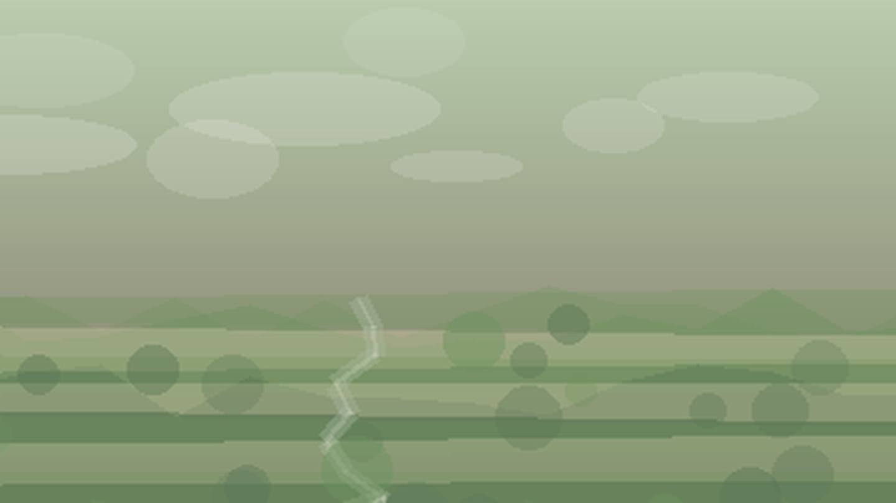

Что посадить
в Ставропольском крае
Выберите природную зону в Ставропольском крае: условия внутри региона различаются по теплу, влаге, ветру и длине сезона.
северо-восточная сухая степь: тёплая южная зона позволяет широкий набор культур, особенно на защищённых участках. Ориентиры внутри зоны: Нефтекумск, Будённовск.
Открыть страницу зоны → центральная возвышенностьцентральная возвышенность: тёплая южная зона позволяет широкий набор культур, особенно на защищённых участках. Ориентиры внутри зоны: Ставрополь, Изобильный.
Открыть страницу зоны → западная зоназападная зона: тёплая южная зона позволяет широкий набор культур, особенно на защищённых участках. Ориентиры внутри зоны: Невинномысск, Кочубеевское.
Открыть страницу зоны → предгорья Кавказских Минеральных Водпредгорья Кавказских Минеральных Вод: горный рельеф требует учитывать высоту, склон и ночные похолодания. Ориентиры внутри зоны: Пятигорск, Кисловодск, Ессентуки.
Открыть страницу зоны →